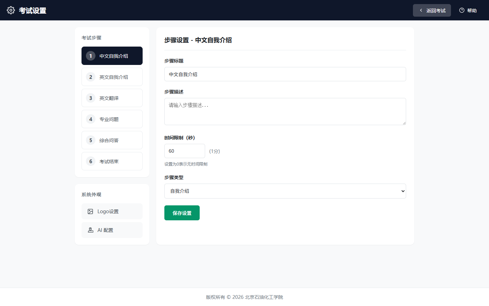

考试设置使用指南
Exam Settings Guide · 步骤属性编辑与 Logo 管理
功能概述

图 1：考试设置页面 — 步骤设置与 Logo 设置
考试设置页面（路由 /settings）是系统管理员配置考试流程参数的核心入口。通过此页面，您可以自定义每个考试步骤的标题、描述、时长和类型，以及设置系统顶部的标题和 Logo 图片。
- 步骤属性编辑：自定义每个考试步骤的标题、描述、时间限制和步骤类型
- Logo 设置：上传学校 Logo 和学院 Logo，设置系统标题
- 实时预览：设置后即时预览顶部栏显示效果
- 即时生效：保存后考试页面立即应用新设置
与"顶部设置"页面的区别：本页面（
/settings）通过文件上传方式设置 Logo，同时包含步骤属性编辑。而"顶部设置"页面（/header-settings）通过 URL 输入方式设置 Logo，功能更简洁。两者修改的是同一组数据，任选其一使用即可。
界面布局
页面结构
| 区域 | 位置 | 内容说明 |
|---|---|---|
| 顶部导航栏 | 页面最上方 | 页面标题"考试设置"、"返回考试"按钮、"帮助"按钮 |
| 左侧边栏 | 左侧固定宽度 | 考试步骤列表、系统外观入口（Logo 设置、AI 配置） |
| 右侧编辑区 | 右侧主区域 | 步骤属性编辑表单 或 Logo 设置表单 |
| 底部版权栏 | 页面最下方 | 版权信息和联系方式 |
左侧边栏
- 考试步骤列表：显示 6 个考试步骤，点击步骤编号选中该步骤进行编辑
- 系统外观：
- Logo 设置：点击切换到 Logo 设置面板
- AI 配置：点击跳转到 AI 配置页面（
/settings/ai）
步骤设置
编辑步骤属性
每个考试步骤有 4 个可编辑属性：
| 属性 | 类型 | 说明 |
|---|---|---|
| 步骤标题 | 文本 | 步骤显示名称，如"中文自我介绍" |
| 步骤描述 | 多行文本 | 步骤的详细说明，显示在考试页面中 |
| 时间限制 | 数字（秒） | 该步骤的倒计时时长，0 表示无限制 |
| 步骤类型 | 下拉选择 | 决定该步骤的功能行为 |
步骤类型选项
| 类型值 | 显示名称 | 说明 |
|---|---|---|
introduction | 自我介绍 | 考生进行自我介绍（中文或英文） |
translation | 英文翻译 | 抽取翻译题目，考生现场翻译 |
professional | 专业问题 | 按科目抽取专业问题，考生回答 |
comprehensive | 综合问答 | 考官自由提问，综合考察 |
completion | 考试结束 | 考试完成，记录保存 |
操作步骤
- 在左侧"考试步骤"列表中点击要编辑的步骤编号
- 右侧编辑区显示该步骤的当前设置
- 修改步骤标题、描述、时间限制或步骤类型
- 时间限制输入秒数，右侧会实时显示转换为"X分Y秒"的格式
- 点击"保存设置"按钮保存修改
提示：时间限制设置为
0 表示无时间限制，计时器不会倒计时。建议为每个步骤设置合理的时间限制，帮助考官控制考试节奏。
注意：修改步骤类型会影响考试页面的功能行为。例如将步骤 3 从"英文翻译"改为"自我介绍"后，该步骤将不再显示抽题按钮。请谨慎修改步骤类型。
Logo 设置
进入 Logo 设置
- 在左侧边栏"系统外观"区域点击"Logo 设置"卡片
- 右侧编辑区切换到 Logo 设置面板
设置系统标题
- 在"系统标题"输入框中输入标题文字
- 标题会显示在考试页面顶部栏中央
- 建议格式："XX 大学 XX 学院研究生复试面试"
上传 Logo 图片
- 点击"选择图片"按钮（学校 Logo 或学院 Logo）
- 从本地选择图片文件（支持 JPG、PNG、GIF 等格式）
- 上传成功后，图片预览会显示在按钮下方
- 如需更换，点击"选择图片"重新上传即可
- 如需删除，点击预览图右上角的 × 按钮
Logo 显示说明
| Logo | 显示位置 | 建议尺寸 |
|---|---|---|
| 学校 Logo | 顶部栏左侧（第一个） | 宽度不超过 200px，高度不超过 80px |
| 学院 Logo | 顶部栏左侧（第二个） | 宽度不超过 200px，高度不超过 80px |
图片要求：建议使用 PNG 格式（支持透明背景），文件大小不超过 2MB。图片会自动适配顶部栏高度，建议使用横向比例的 Logo。
实时预览
预览效果
在 Logo 设置面板底部，有一个预览效果区域，实时显示顶部栏的最终效果：
- Logo 排列：学校 Logo 和学院 Logo 按顺序显示在预览左侧
- 标题显示：系统标题显示在预览右侧
- 背景色：预览使用与考试页面相同的蓝色背景
保存设置
- 确认预览效果满意后，点击底部的"保存设置"按钮
- 系统提示"保存成功"后，设置立即生效
- 返回考试页面（
/）即可看到更新后的效果
步骤设置保存：步骤属性编辑完成后，同样需要点击"保存设置"按钮。保存成功后，考试页面会立即重新加载步骤设置，无需手动刷新。